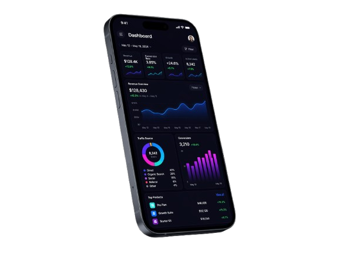

Clearer priorities
Decide what to fix, build, and scale first without wasting cycles on noise.

Client led digital growth
We build SEO, Content, and Conversion systems that make growth easier to understand, easier to trust, and harder to lose once momentum starts compounding.
No commitment - just clarity.Free website audit
We will show you what is slowing growth before you commit to anything.Your digital partner
Why teams bring us in
Jora turns scattered marketing effort into a clear operating system. That means sharper priorities, better conversion visibility, and work that compounds instead of resetting every quarter.
Decide what to fix, build, and scale first without wasting cycles on noise.
Build pages and offers around real buyer intent instead of vanity traffic.
Let SEO, content, and CRO work together instead of acting like separate channels.
Know what is working, what is stuck, and what the next best move should be.
What we build
Each engagement is built around the constraint that matters most right now, then extended into a system that keeps making the next decision easier.
Search architecture, intent maps, and technical clarity that make the right pages easier to find and trust.
Hook libraries, buyer angles, and campaign creative systems that make ads clearer, sharper, and easier to test.
Offer shaping, page systems, and testing frameworks that turn attention into qualified pipeline.
How we work
We diagnose the constraint, map the commercial priorities, build the right system, and refine it with signal instead of guesswork.
We inspect search visibility, buyer journeys, page performance, and offer clarity to find the few constraints that are actually slowing growth.
Selected proof
These examples are placeholders by design. They show how Jora can present outcomes clearly once verified client proof is ready.
Average Revenue Lift
0% Illustrative lift target from clearer intent capture and conversion design.Revenue Generated
£0k+ Example buying-stage assets mapped into a working system.Traffic Growth
Once the system is aligned, progress becomes easier to explain and easier to extend.“They made the next move obvious. The work felt commercial, calm, and precise from the start.”
Placeholder client, SaaS category“What stood out was the clarity. We could finally see where content, search, and conversion were helping or hurting each other.”
Placeholder client, service business“It felt like a partner team, not a reporting layer. Decisions got sharper every month.”
Placeholder client, B2B growth teamPartners
Jora is positioned as a partner-led agency. The strategy stays commercial, the communication stays direct, and the detail stays owned.
Ready to scale properly?
Use the contact page to share what feels stuck, slow, or underperforming. We will map the clearest next moves across search, content, and conversion.